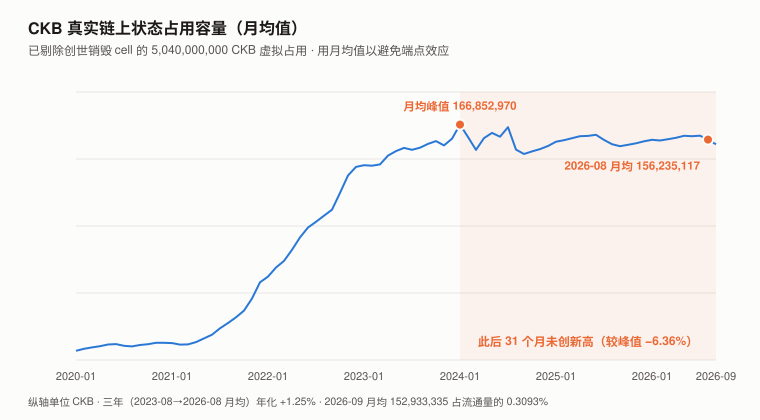
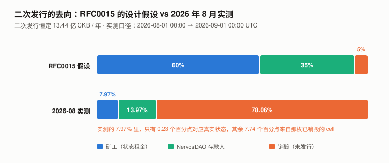
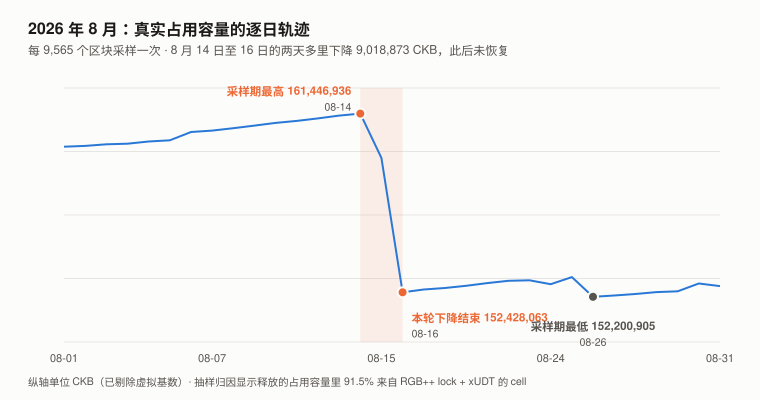

CKB / Nervos 完整调研与分析报告
版本：2026 年 8 月（首期）
完成日期：2026-09-09
本系列第十二个资产（BTC / SOL / ADA / ETH / BNB / HYPE / UNI / TRX / XIN / DOT / ZEC / CKB）本版更新要点（首期，故为「本期确立了什么」）：
- 本期把 CKB 区块头的
dao字段解出来了，并用它做出一份逐项的月度货币流分解。
八月总发行ΔC= +292,369,042 CKB，进入 DAO/国库池ΔS= +100,267,109 CKB，
进入流通 +192,101,933 CKB。
⚠️ 初稿把它称为「本系列第一个完全闭合的分解」并以浏览器流通量序列为证，这是错的，已撤回——
浏览器的circulating_supply在源码里就是C − S − 常数，与本推导是同一个式子（见 4.3）。
本报告真正独立的交叉核对有五处，列在 4.3.1。dao字段里的「占用容量」U有 97.06% 是一个硬编码的虚拟数——
创世那枚 84 亿 CKB 的销毁 cell 被按SATOSHI_CELL_OCCUPIED_RATIO = 6/10记作 50.4 亿的占用。
剔除它之后，CKB 真实的链上状态是 1.529 亿 CKB（2026-09 月均），占流通量的 0.3093%。- 这个真实状态的月均值在 2024 年 1 月见顶 166,852,970 CKB，此后 31 个月未创新高；
2026 年 8 月月均 156,235,117，较峰值 −6.36%，近三年月均年化 +1.25%。
CKB 的整套经济模型是向状态收租，而这个税基已经两年半没有创新高。
⚠️ 初稿写的是「三年增长 0.38%」，那是拿两个 9 月 1 日的快照相减得出的端点假象——
同一序列在 1,103 天里有 878 天高于那个起点。已全部改用月均口径，见第 2 章与图 1。- RGB++ 在 8 月 14–17 日的两天多里解绑掉约 88% 的链上足迹。
抽样归因（22/51 个下降段，覆盖降幅 36.8%）显示释放的占用容量里 91.5% 来自 RGB++ lock + xUDT 的 cell。
其官方工具链三个主仓库全部处于 archived 状态。- 本期发现 CoinGecko 的 CKB 价格序列在 2026-01 至 2026-05 是坏的（四月隐含年化波动率 632%，
而币安同期是 68%）。对照检查了 DOT / ZEC / TRX 三个资产，均正常。
⚠️ 三个不足以断言「前十一期都没被污染」——余 8 个未查（XIN 最该查）。
本报告不给目标价。 理由写在第 10 章，并给出可替代的反解式约束。
利益冲突声明：作者未持有 CKB，与 Nervos 基金会、Cryptape 及任何 CKB 生态项目无雇佣、
顾问或投资关系。本报告的链上数据全部由作者从 CKB 主网节点与 GitHub 一手仓库直接抓取。
核心结论摘要（一页速览）
| 维度 | 观测 | 判断 |
|---|---|---|
| 价格（8/31） | $0.001033，八月 +25.82%（BTC +24.95%） | beta 预期是 +30.7%（1.231 × 24.95%），实际 +25.82%——特质成分约 −4.9pp |
| 历史最低点 | $0.000796，2026-08-14——就在本报告期内 | 两个独立来源（CoinGecko / 币安）吻合到 0.04% |
| 距 ATH | −97.40%（$0.04370633，2021-03-31） | 十二个资产里第二深，仅次于 DOT |
| 真实链上状态（存储字节折 CKB） | 1.529 亿 CKB = 流通量的 0.3093%（2026-09 月均 ÷ 2026-09-01 流通量） | 这是状态租金机制的全部税基。⚠️ 它测字节数，不等于「被应用锁住的 CKB」 |
| 状态的长期轨迹（月均） | 2024-01 见顶 166,852,970 → 2026-08 156,235,117，31 个月未创新高；近三年年化 +1.25% | 增长在 2024 年初停下，此后在 −6% 的区间内震荡 |
| 协议记的「占用容量」 | 51.93 亿 CKB，其中 97.06% 是虚拟的 | 硬编码常量，非真实状态 |
| 二次发行去向 | 矿工 7.97% / DAO 13.97% / 销毁 78.06% | RFC0015 举例设想的是 60% / 35% / 5%（是例子，不是协议要求） |
| 八月手续费 | 全月合计 1,298.74 CKB = $1.16 | 占矿工收入的 0.000693% |
| 安全预算 | 日均 $5,388，年化占市值 3.56% | |
| NervosDAO | 91.60 亿 CKB（流通量 18.53%），其中 8.12 亿已在退出队列 | 八月净流出 5,522 万 CKB |
| DAO 名义收益 | 2.06%/年，而流通量年增 4.69% | 存款人份额仍在以 −2.49%/年缩水 |
| RGB++ | 活跃容量剩 2,139,213 CKB | 官方 SDK / API / 浏览器三个仓库均已归档 |
| 在建的东西 | Fiber（支付通道网络），主网脚本 2025-02-28 已部署 | 链上 34 个通道、39,691 CKB——只有 RGB++ 残余量的 1/54 |
| 本报告给目标价 | 否 | 理由与替代约束见第 10 章 |
一句话：CKB 的设计是一台向链上状态收租的机器，而它要收租的那个状态，
折合供应量的 0.31%、且已经三年没有长大；
机器仍在付钱给矿工，只是 97% 的付款依据是一枚 2019 年就写死的虚拟占用。
1. CKB 是什么
1.1 一个把「存储」而不是「计算」定价的链
CKB（Common Knowledge Base）是 Nervos 网络的 L1，2019-11-15 创世，PoW（Eaglesong 算法）。
它与主流 L1 最根本的差别不在性能，而在代币的用途定义：
| 以太坊 | CKB | |
|---|---|---|
| 代币主要用途 | 支付计算（gas） | 占用状态空间的凭证 |
| 存 1 字节状态要 | 一次性 gas | 持有并锁定 1 CKB，只要状态在就一直锁着 |
| 状态膨胀的代价 | 由全节点承担，用户不直接付 | 用户以「持有代币的机会成本」持续支付 |
CKB 的账本模型叫 Cell 模型（UTXO 的泛化）。每个 Cell 有一个 capacity 字段，
单位是 CKB；一个 Cell 实际占用多少字节，就必须至少持有多少 CKB。
一个最小的 Cell 是 61 字节，因此至少要 61 CKB。
这套设计的经济含义是：链上状态越多，被锁住的 CKB 越多，流通中的 CKB 越少。
本报告第 5 章要做的事，就是把「链上状态」这个量真正测出来。
1.2 两种发行：一次发行有上限，二次发行永续
| 一次发行（base issuance） | 二次发行（secondary issuance） | |
|---|---|---|
| 总量 | 336 亿 CKB 封顶 | 无上限，恒定 13.44 亿 CKB / 年 |
| 节奏 | 每 8,760 个 epoch（约 4 年）减半 | 永不改变 |
| 去向 | 全部给矿工 | 分给三方，见下 |
| 源码常量 | INITIAL_PRIMARY_EPOCH_REWARD = 1,917,808.21917808 CKB/epoch |
DEFAULT_SECONDARY_EPOCH_REWARD = 613,698.63013698 CKB/epoch |
二次发行的分配规则写在 RFC0015 里，原文（第 136 行）给的例子是：
假设在一次二次发行时，全部 CK Byte 的 60% 用于存储状态、35% 存入 NervosDAO 锁定、
5% 保持流动。那么二次发行的 60% 归矿工，35% 归 NervosDAO 按锁定量比例分配。
剩下的部分（本例中的 5%）如何使用由社区通过治理机制决定；
在社区达成一致之前，这部分二次发行将被销毁。
这段话是本报告的锚。 第 5 章会把「60% / 35% / 5%」这三个假设逐一与 2026 年 8 月的实测对齐。
1.3 三个账都写在区块头里
CKB 每个区块头有一个 32 字节的 dao 字段，装着四个小端序 u64。
这是本报告全部供应量分析的一手数据源，不经过任何第三方统计。
| 偏移 | 含义 | 2026-09-01 的值 |
|---|---|---|
[0..8] |
C — 累计发行量 | 65,349,752,951 CKB |
[8..16] |
AR — 累计利率（创世值恰为 10^16） | 1.202838（÷10^16 后） |
[16..24] |
S — 累计进入 NervosDAO/国库池的二次发行，减去已提取利息 | 7,415,902,821 CKB |
[24..32] |
U — 占用容量 | 5,192,741,969 CKB |
⚠️ 一个必须记下的坑：CKB 官方库的解码函数
extract_dao_data的返回值签名是(ar, c, s, u)，
而它读取的字节顺序是c, ar, s, u。
只看返回值的变量名会把 C 和 AR 解反。
本报告是用两个不依赖任何命名的实测证据定序的：
① 创世块[8..16]恰好等于10,000,000,000,000,000= 10^16，而只有 AR 的定义初值是这个数；
② 创世块[0..8]折合 33,600,001,452 CKB，与文档记载的 336 亿创世发行量一致。
事后在ckb-dao-utils源码中确认，字节顺序确实是c, ar, s, u。
2. CKB 的发展阶段划分
阶段一：创世与「不做通用计算」的路线（2019-11 – 2020）
CKB 主网 2019-11-15 上线。创世分配 336 亿 CKB，其中 84 亿（25%）打入一个 code_hash 全零的锁——
永久不可花费，即所谓「中本聪的礼物」（Satoshi's Gift），
其锁参数 0x62e907b15cbf27d5425399ebf6f0fb50ebb88f18 与源码常量 SATOSHI_PUBKEY_HASH 逐字节相同。
这枚销毁 cell 在第 5 章会重新出现，而且是本期最重要的发现的核心。
阶段二：状态快速积累（2021 – 2023-09）
链上真实占用容量从 2020-09 的 1,048 万 CKB 涨到 2023-09 的 1.522 亿 CKB，三年 14.5 倍。
这是 CKB 唯一一段「税基真的在长」的时期。2021-03-31 价格见 ATH $0.04370633。
阶段三：首次减半（2023-11-19）
epoch 8760、区块 11,487,788、2023-11-19 17:23 UTC，一次发行从每 epoch 1,917,808 CKB 减半到 958,904 CKB。
阶段四：RGB++ 叙事（2024 – 2025）
RGB++ 是把比特币 UTXO 与 CKB Cell 做同构绑定的协议，让比特币上的资产用 CKB 做验证层。
这是 CKB 在 2024–2025 年的主叙事，也是本期第 6 章的对象。
阶段五：状态见顶与 RGB++ 退潮（2024-01 – 至今）
⚠️ 本节的口径经过一次修订，修订本身值得记录。
初稿用「每年 9 月 1 日」的年度快照，得出「三年 +0.38%，不是放缓是停止增长」。
推理审查指出这是端点选择：终点 2026-09-01 恰好在本报告自己判定「不应外推为趋势」的
RGB++ 解绑事件之后。复核浏览器 1,103 天的日度序列后，初稿的描述不成立——
该窗口内有 878 天高于那个起点，且序列在 2024-01-22 至 01-28 曾连续七天站上 1.80 亿。
本节改用月均值，它对端点不敏感。
| 月份（月均） | 真实占用容量 |
|---|---|
| 2023-08 | 150,526,365 CKB |
| 2023-12 | 156,920,036 CKB |
| 2024-01 | 166,852,970 CKB ← 月均峰值 |
| 2024-09 | 146,032,169 CKB ← 峰值后的月均低点（2023-01 之前另有更低的月份） |
| 2025-08 | 152,958,239 CKB |
| 2026-07 | 159,019,263 CKB |
| 2026-08 | 156,235,117 CKB（较峰值 −6.36%） |
| 2026-09 | 152,933,335 CKB |
| 口径（月均） | 变化 | 年化 |
|---|---|---|
| 2023-08 → 2026-08（三年） | +3.79% | +1.25% |
| 2024-08 → 2026-08（两年） | +4.76% | +2.35% |
| 2025-08 → 2026-08（一年） | +2.14% | +2.14% |

修订后的判断：不是「三年零增长」，而是「2024 年 1 月见顶后 31 个月没有创新高，
期间以每年 1–2% 的速度在一个约 ±6% 的带内震荡」。
阶段四和阶段五在时间上是重叠的——RGB++ 叙事最热的两年，
链上状态从 2024 年初的峰值一路走平并小幅回落。
这两件事同时为真，本身就是本报告要解释的东西。
3. CKB 当前现状
3.1 价格与市场
口径：CKB 与 BTC 均取币安 UTC 日收盘价，八月定义为 2026-07-31 收盘 → 2026-08-31 收盘。
原因见 3.2——CoinGecko 的 CKB 序列在今年前五个月不可用。
| 指标 | 值 |
|---|---|
| 价格（2026-09-09） | $0.00113774（CoinGecko）/ 币安中间价 $0.0011465 |
| 市值 / FDV | $56,300,510 / $57,257,710 |
| CoinGecko 排名 | 第 421 位 |
| 流通量 / 总量 | 49,486,923,659 / 50,328,778,792（无上限，二次发行永续） |
| 八月涨幅 | +25.82%（BTC +24.95%） |
| 八月盘中区间 | $0.000796（8/14）– $0.001129（8/20），振幅 41.8% |
| 历史最低 | $0.000796，2026-08-14 — 就在本报告期内 |
| 距 ATH | −97.40%（$0.04370633，2021-03-31） |
| 近一年 / 年初至今 | −77.60% / −54.01%（BTC −30.75% / −11.17%） |
八月是 CKB 近 13 个月里第二个上涨的月份（另一个是 2026-04 的 +0.62%），
而它与 BTC 同月的 +24.95% 几乎同步——8/20–8/22 三天 BTC 从 $64,686 涨到 $78,318，CKB 同步跳升。
八月的上涨里，CKB 自身贡献的部分是负的。
正确的算法不是看 R²（R² = 46.2% 的字面含义是「53.8% 的日波动不由 BTC 解释」，
拿它来论证「没有自己的信息」是把反证当证据，初稿这么写过，已更正），
而是看 beta 预期与实际的残差：
值 BTC 八月（币安口径） +24.95% CKB 的 beta 1.231 beta 预期涨幅 +30.71% CKB 实际涨幅 +25.82% 特质（残差）成分 约 −4.89 个百分点 用 CoinGecko 口径（CKB +20.15% / BTC +23.62%，beta 预期 +29.08%）算，残差约 −8.9pp，方向相同。
这与第 6 章的叙事一致：八月中旬 CKB 链上发生的唯一大事是 RGB++ 资产被大规模解绑。
3.2 一个必须先说明的数据问题：CoinGecko 的 CKB 序列在今年前五个月是坏的
本报告在计算年化波动率时得到 234.2% 和一个近乎为零的 R²（0.008），这个结果不可信，
因此回到交易所一手数据对质。币安 CKBUSDT 日线与 CoinGecko 逐月对照：
| 月份 | CoinGecko 隐含年化波动率 | 币安 | 月均价偏差 |
|---|---|---|---|
| 2025-09 至 2025-12 | 64%–149% | 63%–150% | 0.2%–1.0% |
| 2026-01 | 111% | 86% | +6.4% |
| 2026-02 | 183% | 96% | +22.6% |
| 2026-03 | 322% | 49% | +36.8% |
| 2026-04 | 632% | 68% | +41.7% |
| 2026-05 | 252% | 54% | +33.8% |
| 2026-06 至 2026-09 | 44%–77% | 44%–65% | 0.7%–2.9% |
这是本系列第一次遇到「数据源在窗口两端都对、中间一段坏掉」的情况。
前几期遇到的是「数据源在测另一条链」（DOT）或「数据源的模型不适用」（ZEC），
那两种错误在整个窗口内一致；这一次的错误只在特定时段出现，因此任何只看首尾的核对都发现不了它。
排他性检查：用同一方法对照了 DOT / ZEC / TRX 三个资产的 CoinGecko 与币安序列，
三者在全部 13 个月内均一致（波动率比值 < 1.5 倍、月均价偏差 < 5%）。
⚠️ 这三个不足以支持「前十一期都没被污染」的全称结论，初稿这么写过，已收窄。
已查 3 个（DOT / ZEC / TRX），均正常；余 8 个（BTC / SOL / ADA / ETH / BNB / HYPE / UNI / XIN）未查。
按本报告自己的诊断逻辑（流动性越低的资产，聚合报价越容易坏），
XIN（八月日成交中位数 $10,878）恰恰是最该查而没查的那一个。下期补。
修正后的风险特征（币安，2025-09-10 至 2026-09-09，365 天日对数收益）：
| 指标 | CKB | BTC |
|---|---|---|
| 年化波动率 | 80.3% | 44.3% |
| beta（相对 BTC） | 1.231 | 1.000 |
| 相关系数 / R² | 0.680 / 0.462 | — |
校验：R² = (β × σ_BTC ÷ σ_CKB)² = (1.231 × 44.3% ÷ 80.3%)² = 0.462 ✓
3.3 流动性：这是本系列见过的最薄的可交易资产
| 口径 | 值 |
|---|---|
| 币安 CKBUSDT 八月日成交额（中位数 / 均值） | $153,486 / $239,910 |
| CoinGecko 全站八月日成交额中位数 | $1,464,833 |
| 币安订单簿 ±1%（买 / 卖） | $35,156 / $12,403 |
| 币安订单簿 ±2%（买 / 卖） | $37,601 / $22,594 |
| 500 档双边深度合计 | $259,092 = 市值的 0.46% |
| 买一卖一价差 | 0.087% |
卖出约 2.3 万美元就会把币安价格打下 2%。
交易对状态（币安 exchangeInfo，一手） |
|
|---|---|
| CKBUSDT | TRADING（现货 + 杠杆） |
| CKBBTC | BREAK（暂停），最后一根日线成交在 2022-05-14 |
CKB 目前不在币安的 Monitoring Tag（观察名单）上（2026-09-04 那批加入的是 AVA / GNS / SCR / TOWNS）。
⚠️ 该条与「KuCoin 于 2026-05-20 将 CKB 移出全仓杠杆」一样，来源为搜索摘要，本报告未打开一手公告，核实等级低。
3.4 宏观环境
| 因素 | 状态（9 月初） | 影响 |
|---|---|---|
| 联邦基金利率 | 3.50–3.75% | — |
| 9 月加息概率 | 65.9%（CME FedWatch，8/31） | 利空 |
| PCE 通胀 | 3.7%（12 个月）/ 4.1%（6 个月） | 支持加息 |
| 10 年期美债 | 4.79% | — |
本节沿用与本系列 TRX / UNI / XIN / DOT / ZEC 期同一时点的宏观快照。
CKB 的 R² 为 46.2%，在十二个资产里居中——宏观通过 BTC 的传导可以解释它约四成六的波动。
4. 八月的货币流：逐项分解（本期核心章之一）
4.1 测量方法
取两个区块头的 dao 字段直接相减。没有第三方统计参与。
| 起点 | 终点 | |
|---|---|---|
| 时点（UTC） | 2026-08-01 00:00 | 2026-09-01 00:00 |
| 区块高度 | 20,025,197 | 20,321,726 |
| epoch | 14,661 | 14,847 |
| C（累计发行） | 65,057,383,909 | 65,349,752,951 |
| S（DAO/国库池） | 7,315,635,712 | 7,415,902,821 |
| U（占用容量） | 5,199,777,992 | 5,192,741,969 |
| AR（累计利率） | 1.200735 | 1.202838 |
区间跨 296,529 个区块、186 个 epoch。实测出块间隔 9.03 秒（协议目标 8 秒），
epoch 长度因此被调到约 1,594 块，epoch 实际时长正好 4.00 小时（协议目标 4 小时）。
4.2 分解
一次发行与二次发行的比例由源码常量固定：当前处于第一次减半之后，
每 epoch 一次发行 958,904.109589 CKB、二次发行 613,698.630137 CKB，
即一次发行占总发行的 60.9754%。
| 项 | CKB | 占总发行 |
|---|---|---|
| 总发行 ΔC | +292,369,042 | 100% |
| ├ 一次发行（全部给矿工） | +178,273,806 | 60.98% |
| └ 二次发行 | +114,095,236 | 39.02% |
二次发行按共识规则拆分。矿工那一份的公式在 ckb/util/dao/src/lib.rs 里写得很直白：
miner_issuance = g2 × parent_u / parent_c // g2 = 该块的二次发行
nervosdao_issuance = g2 − miner_issuance // 其余全部进入 S
current_s = parent_s + nervosdao_issuance − withdrawed_interests
区间内 U/C 的均值为 7.9693%，据此：
| 二次发行的去向 | CKB | 占二次发行 | 对照 |
|---|---|---|---|
| → 矿工（状态租金） | +9,092,578 | 7.97% | ✅ 独立：浏览器 mining_reward = 逐块 secondary_reward 求和，增量 9,089,920，差 0.03% |
| → NervosDAO 存款人计提 | +15,937,324 | 13.97% | ⚪ 直接取用浏览器 deposit_compensation 增量，非本报告独立推导 |
| → 国库（未发行，即销毁） | +89,065,334 | 78.06% | ⚠️ 不独立：浏览器 treasury_amount 由 S 派生（见 4.4），增量 95,802,883，差 +7.6% |
S 的变化：进入 S 的是 114,095,236 − 9,092,578 = 105,002,658；
实测 ΔS = +100,267,109；差额 4,735,549 CKB 就是八月 NervosDAO 存款人实际提走的利息。
4.3 闭合检验
进入流通的量 = 总发行 − 留在 S 里的量：
ΔC − ΔS = 292,369,042 − 100,267,109 = +192,101,933 CKB
| 口径 | 八月流通量增量 |
|---|---|
| 本报告（区块头 dao 字段推导） | +192,101,933 CKB |
CKB 浏览器 circulating_supply 日度序列 |
+192,142,780 CKB |
| 差额 | 40,847 CKB（0.021%） |
⚠️ 本报告初稿把这一行写成「两条独立路径的核对」，这是错的，现予撤回。
打开 CKB 浏览器源码
app/models/market_data.rb后可以看到，它的circulating_supply是：
ruby parsed_dao.c_i - parsed_dao.s_i - BURN_QUOTA - ecosystem_locked - team_locked - private_sale_locked - founding_partners_locked - foundation_reserve_locked - bug_bounty_locked即
C − S − 84 亿 − 各归属锁定 − 赏金地址余额。 而全部归属锁定的最后一档在 2022-12-31 释放完毕，
赏金地址（ckb1qyqy6mtud5sgctjwgg6gydd0ea05mr339lnslczzrc）余额 103,000,771 CKB、历史上只有 1 笔交易、
当前 1 个活跃 cell，八月未发生变化。所以浏览器算的就是
C − S − 常数，与本报告的ΔC − ΔS在代数上是同一个量，不是独立测量。
那 40,847 CKB 的差额也不是「两个方法吻合」，它对应约 9.5 分钟的区块边界漂移
（本报告取的是 20,025,197 与 20,321,726 两个块，浏览器取的是它自己日度快照时刻的 tip）。这是本系列 UNI 期「把拟合报成了验证」的同型错误，只是更彻底——那次是拟合，这次是恒等式。
本报告因此把这一条降级为「恒等式自洽」，不作为交叉验证。
八月的流通量增速仍然成立：+0.3901%（月），年化 4.59%（简单）/ 4.69%（复利），
因为它只依赖 ΔC 与 ΔS 两个链上直读值，不依赖浏览器。
4.3.1 本报告真正独立的五处交叉核对
撤回上面那一条之后，需要说清楚哪些核对是真的独立的（判据：两条路径不共用同一个输入字段）：
| # | 被核对的量 | 路径一 | 路径二 | 残差 |
|---|---|---|---|---|
| 1 | 真实占用容量 | 区块头 dao 的 U 减虚拟基数 |
浏览器 occupied_capacity = 对全部活跃 cell 的 occupied_capacity 求和（源码 daily_statistic.rb，与 dao 字段无关） |
0.0015% / 0.0092% |
| 2 | 二次发行给矿工的部分 | 本报告按 g2 × U/C 推导 |
浏览器 mining_reward = 逐块 secondary_reward 求和（来自节点的 block economic state） |
0.03% |
| 3 | NervosDAO 存量 | 本报告用 indexer get_cells 全量遍历 22,675 枚 cell |
浏览器 total_dao_deposit（基于其自建的 DaoEvent 索引） |
0.003% |
| 4 | 八月总发行 ΔC | 区块头 C 相减 = 292,369,042 | 186 个 epoch × 每 epoch 1,572,602.74 CKB = 292,504,109 | 0.05% |
| 5 | 累计一次发行 | C(9/1) − C(创世) − epoch × 二次发行常量 |
era0 + era1 分档累加 | 0.01% |
第 1 项是本报告最重要的核对，因为第 5 章的全部结论都建立在它上面，
而它确实是两条不共用输入的路径。
4.4 国库项的残差：成因已定位
上表里 treasury_amount 一项与本报告的推导差 +7.6%；
浏览器三项加总（95,802,883 + 15,937,324 + 9,089,920 = 120,830,127）比区间实际的二次发行 114,095,236
多出 6,731,020 CKB（5.9%）——一个正确的分解不可能大于被分解的总量。
初稿把这归因于「日度边界对齐」，这是猜测。领域审查（Codex）提出了一个具体假说，
本报告打开浏览器源码 app/models/daily_statistic.rb 核实，假说成立：
define_logic :deposit_compensation do
unclaimed_compensation.to_i + claimed_compensation.to_i # 全部未领取 + 已领取
end
define_logic :treasury_amount do
parse_dao = CkbUtils.parse_dao(current_tip_block.dao)
parse_dao.s_i - unmade_dao_interests # S 减去「阶段一未领取」
end
def unmaed_cells
DaoEvent...deposit_to_dao.created_before(ended_at).unconsumed_at(ended_at) # 只含阶段一
end
treasury_amount 只从 S 里减掉「阶段一存款 cell 的未领取利息」，
而 deposit_compensation 把阶段一、阶段二、已领取的全部计入。
因此「阶段二（取款中）cell 的未领取利息」同时落在两项里，被重复计算。
本报告 5.5 测出阶段二 cell 有 812,109,529 CKB，占 DAO 总量的 8.9%——
这个量级与 6,731,020 CKB 的超额是相容的。
两条要记住的：
① 浏览器的treasury_amount不是独立测量——它由S派生，而S正是本报告用的那个字段。
② 初稿说「浏览器有问题，本报告没问题」是不成立的——在没有读源码之前，
本报告没有任何依据把误差归到对方身上。这个判断是被外部审查纠正的。
5. 状态租金：设计与实测之间有多远（本期核心章之二）
5.1 协议记的「占用容量」有 97% 是一个虚拟数
dao 字段里的 U 在 2026-09-09 是 5,193,042,382 CKB。
按字面理解，这意味着 CKB 链上有 51.93 亿字节（约 5.2 GB）的状态。这个数是假的。
证据一：创世块的 U 就已经是 50.41 亿。
| CKB | |
|---|---|
创世块 dao 字段的 U |
5,041,203,089 |
本报告遍历创世块 673 个输出、逐个按 8 + lock脚本 + type脚本 + data 字节数算出的真实占用 |
1,203,211 |
| 差额 | 5,039,999,878 |
证据二：这个差额等于 84 亿 × 0.6。
CKB 源码 spec/src/consensus.rs：
// Ratio of satoshi cell occupied of capacity,
// only affects genesis cellbase's satoshi lock cells.
pub(crate) const SATOSHI_CELL_OCCUPIED_RATIO: Ratio = Ratio::new(6, 10);
而 spec/src/lib.rs 里这个字段的文档注释是：
/// The burned cell virtual occupied, design for NervosDAO
（被销毁 cell 的虚拟占用，为 NervosDAO 而设计）
即：创世那枚 84 亿 CKB 的永久销毁 cell，被协议按 60% 记作 50.4 亿 CKB 的「占用容量」。
84 亿 × 0.6 = 5,040,000,000，与上表差额 5,039,999,878 相差 122 CKB
（这 122 来自本报告对创世 cell 占用字节数的近似算法，误差 0.01%）。
证据三：剔除虚拟基数后，与浏览器独立索引的结果吻合。
| 2026-08-01 | 2026-09-01 | |
|---|---|---|
dao 字段 U |
5,199,777,992 | 5,192,741,969 |
| 减去虚拟基数 5,040,000,000 | 159,777,992 | 152,741,969 |
CKB 浏览器 occupied_capacity（独立索引全部活跃 cell） |
159,780,423 | 152,727,921 |
| 残差 | −0.0015% | +0.0092% |
结论：CKB 真实的链上状态是 1.527 亿 CKB。协议记的 51.93 亿里，97.06% 是那枚销毁 cell 的虚拟占用。
5.2 RFC0015 的三个假设，逐一对照
RFC0015 的分配例子假设 60% 存状态 / 35% 存 DAO / 5% 流动。2026 年 8 月的实测：
| RFC0015 的例子 | 2026-08 实测 | 差距 | |
|---|---|---|---|
| 状态占用 → 矿工 | 60% | 7.97% | 7.5 倍 |
| └ 其中来自真实状态 | — | 0.23 个百分点 | |
| └ 其中来自虚拟销毁 cell | — | 7.74 个百分点 | |
| NervosDAO → 存款人 | 35% | 13.97% | 2.5 倍 |
| 剩余 → 销毁 | 5% | 78.06% | 15.6 倍 |

这张表是本报告最重要的一张。
① 状态租金这条腿几乎没有在工作。 矿工拿到的 7.97% 里，只有 0.23 个百分点对应真实状态；
其余 7.74 个百分点是在为一枚 2019 年就被销毁、永远不会变化的 cell 付租金。
如果没有这个虚拟基数，矿工的状态租金收入会是现在的 1/34。② 「在社区达成一致之前销毁」这个临时安排，运行到今天已经烧掉了约 67 亿 CKB
（浏览器treasury_amount累计值 6,698,061,406 CKB），八月一个月就烧掉 8,907 万 CKB。
而截至 2026-09，Nervos 官方唯一与国库有关的仓库是nervosnetwork/ckb-treasury-lab，
建于 2026-07-02，README 第一行写着「NOTE This is not a production project.」
——距 RFC0015 写下这个「临时安排」已经过去八年。
5.2.1 虚拟占用不是「白记的账」——它是一笔从持有人到矿工的转移
初稿把「97.06% 是虚拟的」当成纯粹的诊断性发现。推理审查指出它有可量化的经济后果，且方向与本报告的另一处叙述冲突。
假设把虚拟基数取消、U 只记真实状态：
| 现状（含虚拟基数） | 假想（只记真实状态） | |
|---|---|---|
| U / C | 7.9693% | 0.2342% |
| 八月矿工的状态租金 | 9,092,578 CKB | 267,199 CKB |
| 八月进入销毁的部分 | 89,065,334 CKB | 97,890,713 CKB |
| 销毁占二次发行 | 78.06% | 85.80% |
差额 8,825,379 CKB/月、年化 105,904,545 CKB（流通量的 0.214%），
是虚拟基数把本应销毁的部分转给了矿工。
这个发现纠正了本报告 9.1/9.2 两张表里的一处不一致：
多头 #1「78.06% 被销毁，实际稀释低」与空头 #2「97.06% 的占用是虚拟的」是同一枚硬币的两面——
正是那个虚拟基数把销毁比例从 85.80% 压到了 78.06%。
对持有人而言，虚拟占用等于每年多 0.214% 的稀释；对矿工而言是一笔补贴。同时也要给这个设计一个公允的读法（本报告未找到设计文档，以下是重构，未经核实）：
创世那 84 亿销毁币仍然计在 C 里。若不给它记虚拟占用，它对应的那份二次发行会被永久销毁——
协议按 60% 把它当作一个「平均参与者」对待，是一个可以争论但并非无理的选择。
下期需核实：SATOSHI_CELL_OCCUPIED_RATIO = 6/10是否有对应的 RFC / issue / PR 讨论记录。
5.3 反解：要让 RFC0015 的假设成立，需要什么
不给目标价，改给约束（本系列 DOT 期确立的做法：反解比单边区间敏感性有信息量）。
要让「60% 的 CK Byte 用于存储状态」成立，真实状态需要达到 0.60 × C = 392.10 亿 CKB，
即当前 1.527 亿的 257 倍。
| 按什么增速外推 | 实测增速 | 达到 257 倍需要 |
|---|---|---|
| 近 12 个月 | +1.90% / 年 | 295 年 |
| 近 36 个月年化 | +0.13% / 年 | 4,429 年 |
这个反解不是修辞。 它说明的是：RFC0015 设想的那个均衡状态，在当前的采用轨迹上不可达，
因此「状态租金」不是一个即将启动的机制，而是一个需要重新设计的机制。
而重新设计需要治理，治理需要国库，国库还停在 lab 阶段。
5.4 NervosDAO 保护了什么，没保护什么
RFC0015 第 138 行写：
对长期持币者而言，只要把代币锁进 NervosDAO，二次发行的通胀效应就只是名义上的。
对他们来说就像二次发行不存在一样，他们持有的是像比特币那样有硬顶的代币。
这句话在它自己的范围内成立，但读者很容易把它理解成「存进 DAO 就不被稀释」，那是错的。
AR 的更新公式（源码）是 ar_increase = parent_ar × g2 / parent_c——
存款人按「二次发行 ÷ 累计发行」的全额计息，因此二次发行对他们确实是中性的。
但一次发行不在补偿范围内。
| 八月实测 | 年化 | |
|---|---|---|
| NervosDAO 名义收益（AR 增长） | +0.1751% | +2.06% |
| 流通量增长 | +0.3901% | +4.69% |
| 存款人相对份额变化 | −2.49% |
所以：把 CKB 存进 NervosDAO，仍然每年损失约 2.5% 的网络份额。
这不是设计缺陷——RFC0015 从没承诺补偿一次发行，就像比特币持有者也承受比特币的区块奖励稀释。
它是「像比特币一样有硬顶」这个类比在读者端的失真。
这个缺口会随减半收敛。 按当前参数外推（假设 U/C 与 DAO 占比不变）：
| 时点 | 一次发行 | 流通量年增 | DAO 收益率 | 存款人份额年变 |
|---|---|---|---|---|
| 现在 | 21.0 亿/年 | 4.72% | 1.95% | −2.64% |
| 2027-11 第二次减半后 | 10.5 亿/年 | 2.53% | 1.89% | −0.63% |
| 2031-11 第三次减半后 | 5.25 亿/年 | 1.34% | 1.64% | +0.29% |
一个可检验的推论：NervosDAO 存款人的份额侵蚀会在 2031 年前后由负转正。
⚠️ 这是一个恒等式外推，不是预测——它假设 U/C、DAO 占比、提取行为都不变，
而这三个量在过去 12 个月都在变。它的用途是给出量级，不是给出时点。
5.5 NervosDAO 的存量与口径
| 口径 | 数量 | CKB |
|---|---|---|
| 阶段一（存款中）cell | 20,776 枚 | 8,347,466,893 |
| 阶段二（取款中）cell | 1,899 枚 | 812,109,529 |
| 合计（链上 indexer 遍历） | 22,675 枚 | 9,159,576,422 |
对照：get_cells_capacity 一次性查询 |
— | 9,159,593,814（差 0.0002%） |
对照：CKB 浏览器 total_dao_deposit |
— | 8,347,705,393（只数阶段一，差 0.003%） |
口径差异必须说明：CKB 浏览器报的「NervosDAO 存款」只包含阶段一，
漏掉了 8.12 亿 CKB（占合计的 8.9%）已经进入取款流程的部分。
本报告在讲「锁仓比例」时用合计口径，在与浏览器序列做增量对照时用阶段一口径。
| 指标 | 值 |
|---|---|
| 锁仓 / 流通量（合计口径） | 18.53% |
| 锁仓 / 流通量（仅阶段一） | 16.88% |
| 八月存款净变化（浏览器口径） | −55,216,610 CKB |
| 八月新增存入合计 | +131,481,506 CKB |
| 隐含提取 | −186,698,116 CKB |
| 累计存款人数 | 79,965 → 80,087 |
八月 NervosDAO 是净流出的，且 8.12 亿 CKB 还排在取款队列里（占流通量 1.64%）。
6. RGB++ 的收缩：一次可以被逐块测量的解绑（本期核心章之三）
6.1 事件
第 5 章测出的真实状态在八月从 1.598 亿掉到 1.527 亿（−4.40%），
但这个下降不是渐进的——它集中在 8 月 14 日到 17 日的两天多里。
| 采样时点（UTC） | 区块 | 真实占用容量 |
|---|---|---|
| 08-13 17:39 | 20,149,542 | 161,347,500 |
| 08-14 18:53 | 20,159,107 | 161,446,936 ← 采样期最高 |
| 08-15 20:30 | 20,168,672 | 159,211,023 |
| 08-16 21:49 | 20,178,237 | 152,428,063 ← 本轮下降结束 |
| 08-17 21:27 | 20,187,802 | 152,567,815 |
| 08-26 03:05 | 20,264,322 | 152,200,905 ← 采样期最低 |
| 08-31 23:58 | 20,321,712 | 152,741,115 |
采样步长为 9,565 个区块（约一日），共 32 个采样点。
这次下降从 08-14 18:53 的 161,446,936 到 08-16 21:49 的 152,428,063，
两天多下降 9,018,873 CKB，此后没有恢复。
⚠️ 口径提醒：08-16 是这一轮下降的终点，不是八月的最低点。
采样期的最低点是 08-26 03:05 的 152,200,905 CKB，比 08-16 又低 227,158 CKB。
从采样期最高到采样期最低是 −9,246,031 CKB。
本报告在描述这次事件时用 08-14 → 08-16 的区间，因为归因分析只覆盖这个窗口；
两个数不可互换使用。

6.2 归因：抽样分类，不做推断
以 10 个区块为步长扫过 20,159,107–20,178,237 这 19,130 个区块的 U 序列，
得到 51 个降幅超过 50,000 CKB 的下降段，合计 −9,453,316 CKB。
在「下降段」这个总体里随机抽 22 段（覆盖总降幅的 36.8%），
把这些区块的全部非 cellbase 交易的输入 cell 取回来，按 lock + type 脚本分类：
| 输入 cell 的 lock + type | 释放的占用容量 | 占比 | 释放的容量 |
|---|---|---|---|
| RGB++ lock + xUDT | 3,264,442 CKB | 91.5% | 5,847,291 CKB |
| secp256k1 + 无 type | 279,136 CKB | 7.8% | 4,669,045 CKB |
| 其余四类合计 | 25,971 CKB | 0.7% | 115,772 CKB |
样本自洽性检验（220 个区块、674 笔非 cellbase 交易，与上表同一次运行）：
逐笔算出的占用容量净变化为 −3,488,043 CKB（释放 3,569,549 − 新增 81,506），
而这些区块 dao 字段 U 的实测净变化是 −3,474,623 CKB，残差 +0.39%
（残差方向与创世块那 122 CKB 一致，来自本报告对 occupied 字节数的近似算法）。
脚本身份用一手来源核对（ckb-cell/rgbpp-sdk 的 MainnetInfo 常量表）：
| 脚本 | code_hash | 来源 |
|---|---|---|
| RGB++ lock | 0xbc6c568a1a0d0a09f6844dc9d74ddb4343c32143ff25f727c59edf4fb72d6936 |
MainnetInfo.RgbppLockScript.codeHash |
| xUDT type | 0x50bd8d6680b8b9cf98b73f3c08faf8b2a21914311954118ad6609be6e78a1b95 |
MainnetInfo.XUDTTypeScript.codeHash |
典型交易形态：40 个 RGB++ lock + xUDT 的 cell（每枚容量中位数 254 CKB）作为输入，
输出 1 个 61 字节的标准 secp256k1 裸 cell。即：把绑定在比特币 UTXO 上的资产解绑，换回普通 CKB。
样本内共消耗 20,661 枚 这样的 cell。
外推到整个窗口（按 91.5% 的占比）：RGB++ 释放的占用容量约 864.5 万 CKB，
对应释放的容量约 1,549 万 CKB，约 5.6 万枚 cell。
⚠️ 外推的精度声明：抽样覆盖降幅的 36.8%，抽样框是「下降段」而非全部区块。
本报告不声称 91.5% 是全窗口的精确占比，只声称 RGB++ 是这次收缩的主要来源，
且其量级在千万 CKB 级。
6.3 收缩之后剩下多少
脚本（get_cells_capacity，2026-09-09 实时） |
活跃容量 |
|---|---|
| RGB++ lock | 2,139,213 CKB |
| BTC time lock（RGB++ 跨链的等待锁） | 65,169 CKB |
| xUDT type（全部 xUDT 资产，含非 RGB++） | 9,007,830 CKB |
| NervosDAO type | 9,159,593,814 CKB |
八月之前 RGB++ 的链上足迹约为 1,549 万 + 214 万 ≈ 1,763 万 CKB，现在剩 214 万。
两天多里缩掉约 87.9%。
⚠️ 这些数字量的是「作为存储抵押被锁在这些 cell 里的 CKB」，不是「这些 cell 承载的资产的价值」。
一枚 RGB++ 的 xUDT cell 锁着 254 CKB 的容量，而它记账的那笔 token 可以值任意金额（或零）。
本报告没有、也无法从链上直接读出 RGB++ 所承载资产的美元价值，
因此不把 2,139,213 CKB 折成美元来代表「RGB++ 生态的规模」。初稿这样做过，已删除。
6.4 工具链状态：三个官方仓库都归档了
ckb-cell/rgbpp-sdk 现在重定向到 utxostack/rgbpp-sdk。该组织下与 RGB++ 相关的仓库：
| 仓库 | 最后推送 | 状态 |
|---|---|---|
utxostack/rgbpp-sdk（官方 SDK，58 stars） |
2025-05-27 | archived（归档只读） |
utxostack/btc-assets-api（资产 API） |
2025-09-13 | archived |
utxostack/rgbpp-explorer（浏览器） |
2025-01-07 | archived |
utxostack/RGBPlusPlus-design（设计文档，41 stars） |
2025-04-09 | 未归档但停更 |
utxostack/ckb-bitcoin-spv-service |
2025-01-09 | 未归档但停更 |
| 整个组织最近一次推送 | 2025-10-27 | 且是一个 0 star 的边缘仓库 |
排他性检查（避免把「搬家」误判成「停摆」）：
在 GitHub 全站搜索名称含 rgbpp 的仓库，共 20 个。
近期有推送的只有 oxdev6/fiber-rgbpp-swap（2026-09-02，0 stars）与
fghdotio/rgbpp-indexer（2026-08-26，0 stars）两个个人仓库。
没有找到任何机构维护的接班项目。
6.5 与此同时，Nervos 在建的是另一个东西
| 仓库 | 2026-08 提交数 | 最近发版 |
|---|---|---|
nervosnetwork/fiber（支付通道网络） |
40 | v0.9.0，2026-08-06 |
nervosnetwork/ckb（L1 核心） |
1 | v0.209.0，2026-07-29 |
nervosnetwork/rfcs（协议提案） |
0（近 13 个月共 3 次提交） | — |
nervosnetwork/fiber 的仓库描述是 "A scalable, privacy-by-default payment & swap network"，
v0.9.0 的发版说明全部是可靠性与安全加固条目（数据库迁移、通道恢复、强制关闭结算、路由重试、
gossip 校验与限流、watchtower 清理）。
Fiber 主网的状态（一手核实，初稿在此处出过错）：
初稿写「未能从一手来源确认 Fiber 主网上线时间」，并据此拒绝采用搜索摘要里的「十一月上线」。
打开仓库之后发现，一手证据是充分的，初稿只是没有查到位：
| 证据 | 内容 |
|---|---|
nervosnetwork/fiber README（develop 分支） |
直接给出主网安装命令：FNN_VERSION=0.9.0 NETWORK=mainnet，并要求填入可信的主网 CKB RPC |
config/mainnet/config.yml |
存在，且注明脚本部署记录为 fiber-scripts/deployment/mainnet/migrations/**2025-02-28**-114908.json |
| FundingLock code_hash | 0xe45b1f8f21bff23137035a3ab751d75b36a981deec3e7820194b9c042967f4f1 |
即：Fiber 的主网脚本早在 2025-02-28 就部署在 CKB 主网上，主网不是「计划中」，而是已经在跑。
因此本报告直接去链上量它的规模（get_cells_capacity，2026-09-09）：
| 值 | |
|---|---|
| Fiber FundingLock 活跃 cell 数 | 34 |
| Fiber FundingLock 活跃容量 | 39,691 CKB |
| 同期 RGB++ lock 活跃容量 | 2,139,213 CKB（是 Fiber 的 54 倍） |
| 同期 NervosDAO | 9,159,593,814 CKB |
这个结果对多空两边都重要：
多头方向——Fiber 主网确实存在，不是 PPT；
空头方向——它上线一年半之后，全网 34 个通道、锁定 39,691 CKB。
而 RGB++ 在经历八月那次 88% 的收缩之后，剩下的量仍然是 Fiber 的 54 倍。第 6 章的结论：CKB 在 2024–2025 年的主叙事（RGB++）在链上和代码库两个维度同时退潮，
而八月的价格上涨与此完全无关——它发生在 BTC 三天涨 21% 的同一个窗口里。
一个网络的叙事换轨本身不是坏消息（Fiber 是真实的、主网已上线、在被认真开发），
但接班者目前的链上规模是 34 个通道、39,691 CKB。
这意味着 2024–2025 年基于 RGB++ 给 CKB 的任何估值都需要重做，
而重做时能拿来替换的东西，量级还非常小。
7. 矿工经济与安全预算
7.1 八月矿工收入的构成
| 项 | CKB | 美元（按八月均价 $0.00089145） |
|---|---|---|
| 一次发行 | 178,273,806 | $158,922 |
| 二次发行中的状态租金 | 9,092,578 | $8,106 |
| 区块奖励合计 | 187,366,384 | $167,028 |
| 交易手续费合计（全月） | 1,298.74 | $1.16 |
| 手续费占矿工收入 | 0.000693% |
| 派生指标 | 值 |
|---|---|
| 日均安全预算 | $5,388 |
| 年化安全预算 / 市值 | 3.56% |
| 八月交易笔数 | 539,286（日均 17,396） |
| 单笔平均手续费 | 0.002408 CKB = $0.00000215 |
| 全网算力（Eaglesong） | 96.57 PH/s |
「手续费全月 1.16 美元」这个数字需要正确理解，不要当成笑话读。
CKB 的设计本来就不指望手续费——RFC0015 明说矿工的长期收入来自状态租金而非交易费。⚠️ 初稿在这里写「状态租金也没有实质内容，支撑安全的实际上只有一次发行」，这是错的，现予更正。
虚拟的是计算基数，不是支付。 矿工确实按g2 × U/C收到了 9,092,578 CKB，这笔钱真实入账。
而且因为那 50.4 亿的虚拟占用是永久的、写死在创世里的，它构成一条永不消失的状态租金底线：
当前 C 增长到 1,000 亿时 U/C 7.97% 5.19% 对应的年度状态租金 107,107,392 CKB 69,793,920 CKB 即使一次发行在未来某天全部发完、真实状态仍然是零，矿工每年仍会从二次发行里拿到这一笔。
它随 C 增长而缓慢摊薄，但不会归零。另需注意「已用掉 67.38%」不是跑道剩余。 一次发行是几何衰减序列（每约 4 年减半），
剩余的 109.6 亿是一个收敛级数，永远发不完；「用掉 67.38%」的正确读法是
「发行速率将每四年砍半」，不是「还剩三分之一的时间」。因此正确的表述是：CKB 的长期安全预算不是零，
但它的三个来源里有两个与采用度无关——一次发行按固定表减半，
状态租金的 97.06% 挂在一个 2019 年就固定下来的常数上；
只有手续费和那 0.23 个百分点对应的真实状态租金会随使用增长——
后者八月约 266,640 CKB，加上手续费 1,299 CKB，合计只占矿工收入的 0.143%。
7.2 一次发行的剩余额度与减半时点
| 值 | |
|---|---|
| 一次发行总额度 | 336 亿 CKB（与创世的 336 亿是两笔，互不重叠） |
| 已发行（截至 2026-09-01） | 22,638,167,937 CKB（67.38%） |
| 剩余 | 10,961,832,063 CKB（32.62%） |
| 首次减半 | epoch 8,760，区块 11,487,788，2023-11-19 17:23 UTC |
| 当前 epoch | 14,898 |
| 第二次减半 | epoch 17,520，还差 2,622 个 epoch |
| 按协议目标 4 小时/epoch 推算 | ≈ 2027-11-20（437 天后） |
累计一次发行用两条独立路径核对：① 减法 C(2026-09-01) − C(创世) − epoch 数 × 二次发行常量
= 22,638,167,937 CKB；② 分档累加 era0（epoch 0–8,760）@1,917,808.219 + era1（8,760–14,847）@958,904.110
= 22,636,849,315 CKB。两者差 0.01%。
推算口径说明：CKB 的 epoch 长度是可变的（协议调整区块数以逼近 4 小时），
因此不能用「当前出块间隔 × 1800 块」外推——那会得到 2028-01-07，是错的。
用实测校准：本报告期内 186 个 epoch 恰好覆盖 31 天，平均 4.00 小时/epoch，
与协议目标一致，故采用 4 小时口径。
8. CKB 与其他十一个资产的比较
口径声明：8 月涨幅统一为 CoinGecko 口径的 8/1→8/31，日成交额为 2026 年 8 月的日成交额中位数，
十二个资产在同一查询窗口内取得。
⚠️ CKB 一行的波动率 / beta / R² 用的是币安数据，其余十一个用 CoinGecko——
因为 CoinGecko 的 CKB 序列在 2026-01 至 2026-05 不可用（见 3.2）。
这一行因此与其余十一行不严格可比，读者应据此打折。
8.1 十二资产矩阵
| 指标 | CKB | ZEC | DOT | XIN | TRX | UNI | HYPE | BNB | ETH | SOL | ADA | BTC |
|---|---|---|---|---|---|---|---|---|---|---|---|---|
| 市值 | $0.563 亿 | $204.8 亿 | $18.4 亿 | 无法计算 | $318.1 亿 | $44.0 亿 | $196.5 亿 | $1,009 亿 | $3,052 亿 | $622.7 亿 | $82.7 亿 | $16,047 亿 |
| 8 月涨幅 | +20.15% | +82.88% | +8.07% | +9.67% | +3.14% | +18.06% | +52.40% | +16.71% | +29.86% | +39.68% | +14.65% | +23.62% |
| 距 ATH | −97.40% | −62.09% | −98.03% | −96.75% | −22.31% | −84.30% | −0.26% | −44.66% | −49.43% | −63.73% | −92.86% | −36.62% |
| 8 月日成交中位数 | $146.5 万 | $2.091 亿 | $7,974 万 | $10,878 | $3.709 亿 | $2.456 亿 | $3.062 亿 | $6.399 亿 | $70.41 亿 | $14.35 亿 | $3.804 亿 | $217.09 亿 |
| 年化波动率 | 80.3% ⚠️ | 152.2% | 81.5% | 177.3% | 26.6% | 97.1% | 93.6% | 52.9% | 63.8% | 67.9% | 80.9% | 44.2% |
| beta | 1.231 ⚠️ | 1.549 | 1.15 | 0.63 | 0.247 | 1.329 | 1.076 | 0.920 | 1.300 | 1.319 | 1.375 | 1.000 |
| R² | 46.2% ⚠️ | 19.9% | 38.3% | 2.4% | 16.8% | 36.6% | 25.8% | 59.1% | 81.1% | 73.7% | 56.4% | 100% |
| 年增发 | +4.69% | +3.87% | +3.30% | 无机制 | +0.519% | 总减流增 | 待定 | −4.56% | +0.863% | 递减 | +1.47% | +0.83% |
三个位次值得单独指出：
① CKB 的年增发 +4.69% 是十二个资产里给出了数值的八个当中最高的，超过 ZEC 的 3.87% 和 DOT 的 3.30%。
⚠️ 另外四个（XIN「无机制」、UNI「总减流增」、HYPE「待定」、SOL「递减」）本系列未给出可比数值，
因此不能断言 CKB 是全局最高。
② 距 ATH −97.40% 是第二深的，仅次于 DOT 的 −98.03%；
③ 市值 $0.563 亿是十二个里除 XIN（无法计算）外最小的，仅为 DOT 的 3.1%。
8.2 一个跨期观察：本系列见过的「采用度指标」又多了一个
ZEC 期确立了一条：最有价值的采用度指标是节点自己的记账项，不依赖第三方统计。
ZEC 的屏蔽池占比是第一个，CKB 的真实占用容量是第二个——而且它比屏蔽占比更直接。
| 资产 | 有没有节点原生的采用度指标 | 本期读数 |
|---|---|---|
| BTC | 无（它的产品就是它自己） | — |
| TRX | 有（稳定币存量） | — |
| UNI | 部分（DEX 份额与费用） | — |
| DOT | 弱（coretime 售出数 35/89） | — |
| XIN | 无可验证的 | — |
| ZEC | 有——屏蔽池占比 | 28.85% |
| CKB | 有——真实占用容量 ÷ 流通量 | 0.3093% |
两者的差别在于「分母的含义」：ZEC 的屏蔽占比问的是「已有的币里有多少用了隐私功能」，
CKB 的占用比问的是「链上活跃状态的字节总量，折合成 CKB 后相当于流通量的多大比例」。
答案是 0.3093%。⚠️ 这个指标有一个 ZEC 的屏蔽占比没有的局限，必须写清楚：
它测的是「状态字节数」，不是「被应用占用的 CKB 数量」。
一枚 cell 的容量可以远大于其占用字节（本报告 6.2 实测的 RGB++ cell：容量中位数 254 CKB、占用约 158 字节）。
因此不能用它直接断言「只有 0.31% 的 CKB 在发挥用途」——那是过度解读。
它能支持的是一个更窄但仍然重要的结论：CKB 被设计来定价的那个东西（状态存储）的需求，
三年没有增长。
9. 核心价值逻辑
评分规则（ETH 期确立）：星级编码证据等级，不是后果量级。
全部建立在二手转述上的论据不得给到五星，并在说明栏注明本报告是否取得一手来源。⚠️ 本期按推理审查加两条限定：
① 列名改为「证据等级」——初稿列名写「强度」而规则说「证据等级」，两者不是一回事。
一个证据完美但后果微小的发现（空头 #2，年化 0.214%）会与一个证据完美且决定性的发现（空头 #1）
拿同样的五星。因此本期加一列「后果量级」。
② 同源论据必须标注——多头 #1 / #2 / #4 后半说的都是「发行在下降」，不构成三份独立支持。
9.1 多头逻辑
| # | 论据 | 证据等级 | 后果量级 | 说明 |
|---|---|---|---|---|
| 1 | 实际稀释远低于名义：名义年增发 7.22%，扣掉从未进入流通的部分后 实际 4.69%（月 0.5937% / 0.3901%，复利年化同口径） | ★★★★ | 中 | 一手：dao 字段直读。⚠️ 不再以「与浏览器序列闭合」为佐证（见 4.3，那是同一个式子）。⚠️ 与 #2、#4 后半同源（都在说「发行在下降」），不构成独立支持。⚠️ 与空头 #9 不是重复计算：4.69% 已是净值 |
| 2 | 减半在 14 个月内：一次发行从 21.0 亿/年降到 10.5 亿/年，年增发降到约 2.5% | ★★★★ | 中 | 一手：协议常量与 epoch 计数，确定性事件。与 #1、#4 后半同源 |
| 3 | 估值极低且无解锁悬挂：市值 $0.563 亿，FDV/市值 = 1.017 | ★★★ | 中 | 一手：CoinGecko + 链上供应量交叉核对。⚠️ 低估值本身不是论据，它同时是空头论据的结果 |
| 4 | NervosDAO 锁住 18.53% 的流通量，且份额侵蚀随减半收敛、2031 年前后转正 | ★★★ | 中 | 一手（存量）+ 恒等式外推（收敛路径，假设 U/C 与 DAO 占比不变，而两者都在变）。⚠️ 后半段与 #1、#2 同源。⚠️ 且八月 DAO 是净流出 5,522 万 CKB、另有 8.12 亿在退出队列（见 5.5），本条只说了存量 |
| 5 | Fiber 主网已上线且在被认真开发：八月 40 次提交、v0.9.0 发版，主网脚本 2025-02-28 已部署 | ★★★ | 小（当前） | 一手（代码活跃度 + 主网配置 + 链上脚本实测）。⚠️ 链上足迹 34 个通道 / 39,691 CKB，见 6.5。⚠️ 但本报告的核心指标（占用容量）在结构上测不到支付通道的活跃度——见 10.3 第 2 条 |
| 6 | 抗量子叙事（CoinGecko 归入 "Quantum-Resistant" 分类） | ★ | 未知 | 本报告未核实此说法的技术依据，仅记录分类标签的存在 |
9.2 空头逻辑
| # | 论据 | 证据等级 | 后果量级 | 说明 |
|---|---|---|---|---|
| 1 | 税基自 2024-01 见顶后 31 个月未创新高：月均 166,852,970 → 156,235,117（−6.36%），近三年年化 +1.25% | ★★★★★ | 大 | 一手，三路径核对：dao 字段减虚拟基数、浏览器 1,103 天日度序列独立索引、创世块逐 cell 复算。⚠️ 初稿写「三年零增长」是端点假象，已改用月均口径 |
| 2 | 状态租金的计算基数 97.06% 是虚拟的：源码常量把 84 亿销毁 cell 按 60% 计入占用 | ★★★★★ | 小（0.214%/年） | 一手：源码 + 链规范 + 创世块实测三处互证。⚠️ 后果量级已按 5.2.1 量化：取消它会把销毁从 78.06% 推到 85.80%，对持有人相当于每年 0.214% 的额外稀释。⚠️ 它与多头 #1 是同一枚硬币的两面 |
| 3 | 手续费全月 $1.16，占矿工收入 0.000693% | ★★★★★ | 小 | 一手：浏览器日度序列求和。⚠️ 后果量级标「小」是因为 CKB 的设计本就不指望手续费（见 7.1），本条的价值是诊断性的 |
| 4 | RGB++ 退潮：八月中旬链上足迹缩约 88%，官方 SDK/API/浏览器三仓库均已归档 | ★★★★★ | 大 | 一手：链上抽样归因（覆盖 36.8%，残差 0.39%）+ GitHub 全站排他性检索 |
| 5 | 流动性极薄：币安 ±2% 深度买 $37,601 / 卖 $22,594，500 档双边仅占市值 0.46% | ★★★★ | 大（对可执行性） | 一手：币安订单簿快照（单一时点，未做日内多次采样） |
| 6 | 治理与国库八年未落地：唯一相关仓库建于 2026-07-02 且自称「不是生产项目」 | ★★★★ | 中 | 一手：RFC0015 原文 + 仓库 README |
| 7 | 安全预算 $5,388/天，其中随使用增长的部分只占 0.143% | ★★★★ | 中 | 一手：发行分解 + 手续费序列。⚠️ 已按领域审查更正：状态租金是真实支付，只是计算基数虚拟，不能说它「没有实质内容」（见 7.1） |
| 8 | L1 核心开发放缓：nervosnetwork/ckb 八月 1 次提交（fiber 40 次） |
★★★ | 小 | 一手，但单月样本小：该仓库 2025-12 有 134 次、2026-06 有 70 次，波动很大 |
| 9 | 年增发 4.69%，是十二个资产里给出数值的八个中最高的 | ★★★★ | 中 | 一手。⚠️ 另外四个未给出可比数值，不能断言全局最高。⚠️ 与多头 #1 是同一次测量的两侧，不要双重计数 |
9.3 多空之间真正的分歧点
多空双方对事实没有分歧——上面两张表里的一手数据都不可争议。分歧在一个问题上：
CKB 的低估值，是「一个还没被发现的期权」，还是「一个已经被正确定价的、失效的机制」？
| 多头读法 | 空头读法 |
|---|---|
| 状态没增长是因为还没有杀手级应用，机制本身是好的，一旦有应用，锁仓需求是非线性的 | 状态没增长是因为「用代币换存储」这个定价方式本身没有需求——七年、三次叙事（通用 L1 / RGB++ / Fiber）都没验证出来 |
| 78% 的销毁说明实际稀释很低，是隐藏的通缩 | 78% 的销毁说明这套分配规则的两个接收方都名存实亡，销毁是失败的副产品而非设计目标 |
| 减半临近，供给冲击 | 减半降低的是稀释率，不创造需求；而 CKB 的问题在需求端 |
本报告的立场：两种读法都无法被 2026 年 8 月的数据证伪，因此本报告不在其间下注。
但要指出一个不对称：多头读法需要一个未来事件（杀手级应用），
空头读法只需要现状延续。 第 10 章据此不给目标价。
10. 估值：本报告给什么、不给什么
10.1 本报告不给目标价，理由
| # | 理由 |
|---|---|
| 1 | 收入倍数法不可用：手续费（全月 $1.16）全额归矿工；二次发行的三个接收方是矿工、DAO 存款人、销毁——没有一项是「按持币比例分给全体持有人」。⚠️ 但这条理由本身不判别：BTC 持有人同样对手续费与区块奖励没有索取权，而本系列给了 BTC 目标价——用的是「已实现价格 × MVRV」这类不需要持有人现金流的成本基准法。因此本条只能排除收入倍数法，不能排除定价本身。 真正承重的是下面第 2、3 条。 |
| 2 | 唯一的需求锚是状态占用，而它是流通量的 0.3093%，且月均自 2024-01 见顶后 31 个月未创新高。 用它做分母会得到一个分辨率完全不够的比值（市值 ÷ 真实状态 = $0.368/CKB），而且没有任何可比对象——本系列另外十一个资产都没有同构的指标。 |
| 3 | 相对市值法在 CKB 上退化。 与谁比？RGB++ 已退潮，Fiber 主网虽已上线但链上足迹只有 39,691 CKB，通用 L1 的对标（ETH/SOL/ADA）在架构与用途上都不同构。任何选定的对标都是在偷偷假设结论。 |
| 4 | 本系列 TRX 期的教训：一个估值结构如果价格能从等式两边约掉，它就不是估值。CKB 上任何「市值 = 状态占用 × 倍数」的写法都会犯这个错，因为状态占用本身以 CKB 计价。 |
| 5 | ⚠️ 一条本报告没有尝试的路径，必须声明：CKB 是完全透明的 Cell 账本， |
| BTC 那套「已实现价格 / 持有者成本基准」在原理上可以做——Σ(逐块净流入 × 当日价格)。 | |
| 本报告本期没有做这个尝试（工作量在逐块遍历七年全部 cell）， | |
| 因此「不给目标价」目前站在「未尝试」而非「尝试失败」上，这是本期最大的方法论欠账。下期第一优先。 |
10.2 改给三个反解式约束
反解不是预测，它把「需要发生什么」写成数字，让读者自己判断概率。
| # | 约束 | 计算 |
|---|---|---|
| A | 要让 RFC0015 举例中的那个世界成立（60% 的 CK Byte 用于存状态） | 真实状态需从 1.529 亿（2026-09 月均）涨到 392.10 亿 CKB（约 256 倍）。按月均口径：近 12 个月年化 +2.14% 需 261 年，近 24 个月 +2.35% 需 238 年，近 36 个月 +1.25% 需 445 年。⚠️ 见下方两条限定 |
| B | 要让「随使用增长的收入」撑起当前的安全预算（手续费 + 真实状态租金，合并计算） | 两项八月合计 1,299 + 266,640 = 267,939 CKB，而矿工总收入 187,366,384 CKB。需要增长约 699 倍。 两个极端：全靠状态，则真实状态需增长约 703 倍（与约束 A 的 256 倍同量级，差别在靶子——A 是「达到 60% 占比」，B 是「覆盖全部矿工收入」）；全靠手续费且交易量不变，则单笔需从 $0.00000215 涨到 $0.3097。⚠️ 初稿只单列手续费、得出「14.4 万倍」，那是把一个联合条件拆成了看起来更荒谬的独立条件——RFC0015 明说 CKB 不指望手续费，单独反解它等于打一个设计上就不存在的靶子；而且 A 与 B 不独立，读者不应把 256 倍与 14.4 万倍相乘理解难度。 |
| C | 要让 NervosDAO 存款人的份额不再缩水 | 需要 DAO 收益率（= 二次发行 ÷ 累计发行）≥ 流通量增速。按恒等式外推，这在 2031 年前后第三次减半后自然发生，无需任何采用度改善。 |
⚠️ 约束 A 的两条限定（分别来自领域审查与推理审查）：
① 60/35/5 是例子，不是目标。 RFC0015 那段是说明分配规则用的数字例子，
协议在任何比例下都能正常运行——比例只决定钱流向谁。
因此「差 256 倍」不能读成「机制违约」，它衡量的是文档举例时设想的世界与七年后实际世界的距离。
一个部分反驳：SATOSHI_CELL_OCCUPIED_RATIO恰好是6/10，与例子里的 60% 是同一个数，
说明 0.6 未必是随手写的——但「本例中的 5%」这个限定语是 RFC 原文自己写的，
因此拿 5% 当基准算出的「15.6 倍」不具备基准地位。② 这条约束不是本章的承重墙。 「U/C = 7.97%，其中只有 0.23 个百分点来自真实状态」
是一个自足的事实，不需要任何外部基准。约束 A 只提供量级直觉。约束 C 是三个里唯一「不需要任何人做任何事」就会满足的——
它靠的是一次发行减半，不是靠 CKB 被更多人使用。
本报告认为这是理解 CKB 的关键：它的通缩改善路径是机械的，
而需求改善路径在本报告能观测到的范围内没有出现。
10.3 这套判断的五个弱点
- 单月样本。 本期是 CKB 首期，除状态占用有七年序列外，发行分解只有一个月的实测。
八月中旬的 RGB++ 解绑是一次性事件，它对状态占用的影响不应被外推为趋势。 - 占用容量测的是「状态字节数」，不是「被应用锁住的 CKB」——这两个量差很多，本报告在多处把它们混用了。
一枚 cell 的容量可以远大于它的占用字节：本报告 6.2 抓到的 RGB++ cell 容量中位数 254 CKB，
而占用只有约 158 字节。因此「真实状态只占流通量的 0.3093%」这句话的严格含义是
「链上活跃 cell 的存储字节总量折合 CKB 后占流通量的 0.3093%」，
它支持「存储需求疲弱」，但不支持「只有 0.31% 的 CKB 在发挥用途」。
作为对照，本报告实测的另外两个「被锁住」的量级是：
NervosDAO 9,159,576,422 CKB（流通量的 18.53%）、带 xUDT type script 的 cell 9,007,830 CKB。
⚠️ 本条是领域审查（Codex）指出的，初稿在摘要与第 8 章确实作了过强的表述，已回改。 - 「状态没增长」不等于「没人用」。 高频交易、Fiber 这类链下扩展、
以及不占用新状态的 cell 更新，都不会体现在占用容量上。
本报告用了交易笔数（日均 17,396）做侧证，但这个指标同样低，
不能排除「有大量价值活动但不落在这两个指标上」的可能。 - 订单簿深度是单一时点快照。 未做日内多次采样，不能代表全天流动性。
- Fiber 的价值本报告没有评估。 本报告只测到它的链上足迹（34 个通道、39,691 CKB），
没有测路由量、支付笔数、节点数——这些需要 Fiber 网络自身的 gossip 数据，本报告未取得。
如果 Fiber 产生真实支付量，本报告第 9.3 节的「不对称」判断需要重估。 - 初稿的一个方法论错误已被审查抓到并撤回：把浏览器的
circulating_supply当成对
ΔC − ΔS的独立验证，而它在代数上就是同一个式子（见 4.3）。
这类错误的共同形态是「拿一个派生量去验证它的来源」，本系列 UNI 期已经犯过一次。
11. 附录
11.1 CKB 发展阶段速查
| 阶段 | 时间 | 标志 |
|---|---|---|
| 一 · 创世 | 2019-11-15 | 336 亿创世发行，84 亿打入零地址销毁 |
| 二 · 状态积累 | 2020 – 2023-09 | 占用容量 1,048 万 → 1.522 亿（14.5 倍）；2021-03-31 见 ATH |
| 三 · 首次减半 | 2023-11-19 | epoch 8,760，一次发行减半至 958,904 CKB/epoch |
| 四 · RGB++ 叙事 | 2024 – 2025 | 比特币 L2 叙事；官方 SDK 于 2025-05 停更并归档 |
| 五 · 见顶与退潮 | 2024-01 – 至今 | 状态月均在 2024-01 见顶 166,852,970，此后 31 个月未创新高；2026-08 RGB++ 链上足迹缩约 88%；主力开发转向 Fiber |
11.2 关键数据速查（截至 2026-09-09）
| 项 | 值 | 来源 |
|---|---|---|
| 价格 / 市值 / 排名 | $0.00113774 / $56,300,510 / 421 | CoinGecko |
| ATL | $0.000796，2026-08-14 | 币安盘中 + CoinGecko，两源吻合 0.04% |
| 累计发行 C | 65,429,549,473 CKB | 区块头 dao |
| 流通量 | 49,486,923,659 CKB | CoinGecko；链上 49,482,380,991（差 0.009%） |
| 占用容量 U（协议记） | 5,193,042,382 CKB | 区块头 dao |
| 其中虚拟基数 | 5,040,000,000 CKB（97.06%） | 源码 SATOSHI_CELL_OCCUPIED_RATIO = 6/10 |
| 真实状态 | 153,042,382 CKB | dao 减虚拟基数；浏览器独立索引 153,059,665 |
| 活跃 cell 数 | 1,480,776 | CKB 浏览器 |
| NervosDAO 锁仓 | 9,159,576,422 CKB（22,675 枚 cell） | indexer 遍历 |
| AR（累计利率） | 1.203411 | 区块头 dao |
| RGB++ lock 活跃容量 | 2,139,213 CKB | indexer |
| Fiber FundingLock 活跃容量 / cell 数 | 39,691 CKB / 34 个 | indexer |
| 全网算力 | 96.57 PH/s（Eaglesong） | CKB 浏览器 |
| 当前 epoch | 14,898 | 节点 RPC |
11.3 数据来源与核实状态
| 数据 | 来源 | 核实状态 |
|---|---|---|
| 区块头 dao 字段（C / AR / S / U） | CKB 主网节点 https://mainnet.ckb.dev/rpc |
✅ 一手直读，字节序经创世块双重实测定序并在源码确认 |
| 创世块 673 个输出的逐 cell 占用容量 | 同上，get_block_by_number(0) |
✅ 一手，本报告自行计算 |
SATOSHI_CELL_OCCUPIED_RATIO / 发行常量 |
nervosnetwork/ckb 源码 spec/src/consensus.rs |
✅ 一手，打开了原文件 |
| 二次发行分配公式 | nervosnetwork/ckb 源码 util/dao/src/lib.rs |
✅ 一手，打开了原文件 |
| dao 字节序 | util/dao/utils/src/lib.rs 的 extract_dao_data |
✅ 一手，打开了原文件 |
| RFC0015 的 60/35/5 假设 | nervosnetwork/rfcs 原文第 136 行 |
✅ 一手，打开了原文件 |
创世销毁 cell 与 satoshi_pubkey_hash |
resource/specs/mainnet.toml |
✅ 一手，打开了原文件 |
| 日度占用容量 / 手续费 / 交易数 / mining_reward | CKB 浏览器 mainnet-api.explorer.nervos.org |
✅ 一手 API，且已读源码确认其计算路径（daily_statistic.rb / market_data.rb），区分了哪些独立于 dao 字段、哪些由它派生 |
浏览器 circulating_supply / treasury_amount |
同上 | ⚠️ 由 dao 字段派生，非独立测量——本报告不再用它们做交叉验证（见 4.3、4.4） |
| NervosDAO cell 分阶段统计 | 节点 indexer get_cells 全量分页遍历 |
✅ 一手，22,675 枚逐枚分类 |
| RGB++ / xUDT 脚本身份 | ckb-cell/rgbpp-sdk 的 MainnetInfo 常量 |
✅ 一手，打开了原文件 |
| RGB++ 解绑归因 | 节点区块与前置交易全量取回，抽样分类 | ✅ 一手，覆盖降幅 36.8%，残差 0.39% |
| 仓库活跃度 / 归档状态 / 发版 | GitHub REST API | ✅ 一手 |
| 价格 / 波动率 / beta | 币安 api/v3/klines |
✅ 一手交易所（因 CoinGecko 序列在 1–5 月不可用） |
| 订单簿深度 | 币安 api/v3/depth |
⚠️ 一手但单一时点快照，未做日内多次采样 |
| 市值 / 排名 / ATH / ATL | CoinGecko API | ✅ 一手 API |
| 宏观快照 | 沿用本系列同期数据 | ⚠️ 未在本期重新核实 |
| KuCoin 全仓杠杆移除 CKB | 搜索摘要 | ❌ 未打开一手公告 |
| 币安 Monitoring Tag 名单 | 搜索摘要 | ❌ 未打开一手公告 |
| Fiber 主网状态与足迹 | 仓库 README + config/mainnet/config.yml + 链上 get_cells_capacity |
✅ 一手。初稿曾误判为「无法确认」，经复查更正 |
| RGB++「400+ dApp」等生态数字 | 搜索摘要 | ❌ 未核实，本报告未使用 |
11.4 来源偏向声明
本期的偏向与前十一期相反，需要读者反向校正。
前几期的结构性问题是「数据来自生态内部来源，结构上看多」。
本期的绝大多数数据来自 CKB 节点和 Nervos 自己的代码仓库——它们没有立场，但本报告对它们的选择有立场：
- 本报告主动去测的三个量（状态占用、二次发行去向、RGB++ 存量）都是空头方向的。
一个同样诚实的多头分析可以去测本报告没测的量，例如 Fiber 的通道数与路由量、
xUDT 资产的持有人分布、CKB 在中文社区的开发者活跃度。本报告没有测这些，因此不能声称覆盖完整。 - 传统金融机构对 CKB 没有覆盖。 本报告以 "Nervos CKB research coverage Deutsche Bank
JPMorgan VanEck Bernstein institutional report" 检索，返回结果里没有任何一家传统机构的 CKB 研究；
唯一出现的研究方是 Messari（加密原生研究机构，且该条为一则无日期的新闻稿，本报告未采用）。
一个市值 $0.563 亿、排名 421 的资产不在这些机构的覆盖范围内，这本身是一条信息。
本报告因此只能用 CME FedWatch 与美联储的宏观数据做配平，
无法用传统机构的资产层观点来对冲加密原生来源的看多倾向。 - 本报告未联系 Nervos 基金会或任何生态项目求证。 上述所有「未落地 / 已归档」的判断
都基于公开可查的仓库状态，不排除存在未公开的开发工作。
11.5 发布前审查记录
见本期 thesis_scorecard.md。
免责声明：本报告是研究记录，不是投资建议。
CKB 是一个市值 $0.563 亿、币安 ±2% 深度不足 $4 万的资产，
任何有意义规模的买卖都会显著移动价格。 本报告的全部结论都可能是错的。
📋 核心问题与简明总结
CKB / Nervos 简明速查（2026 年 8 月）
完整论证见
ckb_research_report_202608.md。本文件是浓缩版，供快速复习。
本系列第十二个资产。本报告不给目标价。
1. CKB 是什么
一条 2019 年上线的 PoW L1（Eaglesong 算法），账本用 Cell 模型（UTXO 的泛化）。
它与其他 L1 最根本的差别是代币的用途定义：以太坊的代币付计算，
CKB 的代币是占用状态空间的凭证——存 1 字节状态就要持有并锁定 1 CKB，只要状态在就一直锁着。
因此 CKB 的价值逻辑只有一条：链上状态越多，被锁住的 CKB 越多。
本报告做的事，就是把「链上状态」这个量真正测出来。
2. 两种发行
| 一次发行 | 二次发行 | |
|---|---|---|
| 总量 | 336 亿 CKB 封顶（已发 67.38%） | 无上限，恒定 13.44 亿 / 年 |
| 节奏 | 每约 4 年减半，首次已于 2023-11-19 发生 | 永不改变 |
| 去向 | 全部给矿工 | 分给矿工 / NervosDAO / 销毁 |
第二次减半约在 2027-11-20。
3. 本期最重要的发现：协议记的「占用容量」有 97% 是假的
CKB 区块头的 dao 字段里记着 U（占用容量），当前 51.93 亿 CKB。
但创世块的 U 就已经是 50.41 亿，而创世块全部 673 个输出的真实占用只有 120 万。
差额来自源码里的一行常量：
// The burned cell virtual occupied, design for NervosDAO
pub(crate) const SATOSHI_CELL_OCCUPIED_RATIO: Ratio = Ratio::new(6, 10);
创世那枚 84 亿 CKB 的永久销毁 cell，被按 60% 记作 50.4 亿的「占用容量」。
剔除它之后，CKB 真实的链上状态是 1.529 亿 CKB（2026-09 月均）——占流通量的 0.3093%。
4. 这个真实状态在 2024 年 1 月见顶，此后 31 个月没有创新高
⚠️ 完整报告初稿在这里写「三年 +0.38%，不是放缓是停止增长」，那是端点假象，已撤回。
它取的是两个恰好接近的 9 月 1 日快照；而同一序列的 1,103 天里有 878 天高于那个起点。
下表改用月均值，对端点不敏感。
| 月份（月均） | 真实占用容量 |
|---|---|
| 2023-08 | 150,526,365 |
| 2024-01 | 166,852,970 ← 月均峰值 |
| 2024-09 | 146,032,169 ← 峰值后的月均低点 |
| 2025-08 | 152,958,239 |
| 2026-08 | 156,235,117（较峰值 −6.36%） |
| 口径（月均） | 年化 |
|---|---|
| 近三年（2023-08→2026-08） | +1.25% |
| 近两年 | +2.35% |
| 近一年 | +2.14% |
CKB 的整套经济模型是向状态收租，而这个税基以每年 1–2% 的速度在原地震荡，
两年半没有创新高。
5. RFC0015 的设计假设 vs 2026 年 8 月实测
RFC0015 原文的例子假设：60% 的 CK Byte 存状态、35% 存 NervosDAO、5% 流动。
| RFC0015 假设 | 实测 | |
|---|---|---|
| → 矿工（状态租金） | 60% | 7.97%（其中真实状态只占 0.23 个百分点） |
| → NervosDAO 存款人 | 35% | 13.97% |
| → 销毁 | 5% | 78.06% |
RFC0015 说「在社区达成一致之前，这部分将被销毁」。
这个临时安排至今烧掉约 67 亿 CKB。而 Nervos 唯一与国库有关的官方仓库建于 2026-07-02，
README 第一行写着「这不是一个生产项目」——距 RFC0015 写下这句话已过去八年。
6. 八月的货币流：逐项分解
用区块头 dao 字段直读，不经任何第三方统计：
| 项 | CKB |
|---|---|
| 总发行 ΔC | +292,369,042 |
| ├ 一次发行（矿工） | +178,273,806 |
| └ 二次发行 | +114,095,236 |
| 留在 DAO/国库池 ΔS | +100,267,109 |
| 进入流通 = ΔC − ΔS | +192,101,933 |
⚠️ 完整报告初稿曾用「浏览器
circulating_supply增量 +192,142,780、差 0.021%」作为独立验证，已撤回——
浏览器源码里那个量就是C − S − 常数，与本推导是同一个式子。真正独立的五处核对列在报告 4.3.1。
八月流通量增速 +0.3901%，年化 4.69%——十二个资产里给出数值的八个当中最高。
（另外四个本系列未给出可比数值，故不能称全局最高。）
7. NervosDAO 保护了什么，没保护什么
RFC0015 说存进 NervosDAO 就「像持有比特币那样有硬顶的代币」。这句话容易被读错。
| 年化 | |
|---|---|
| NervosDAO 名义收益（AR 增长） | 2.06% |
| 流通量增长 | 4.69% |
| 存款人相对份额变化 | −2.49% |
DAO 只补偿二次发行，不补偿一次发行。存进去仍然每年损失约 2.5% 的网络份额。
但这个缺口会随减半机械地收敛：2027-11 减半后约 −0.6%，2031-11 减半后转正。
这是三个反解约束里唯一「不需要任何人做任何事」就会满足的。
8. RGB++：八月中旬缩掉约 88%
CKB 在 2024–2025 年的主叙事是 RGB++（比特币资产用 CKB 做验证层）。
- 8 月 14 日至 16 日两天多，链上占用容量掉了 9,018,873 CKB。
- 抽样归因（22/51 个下降段，覆盖 36.8%，残差 0.39%）：释放的占用容量里 91.5% 来自 RGB++ lock + xUDT 的 cell。
- 现在 RGB++ lock 的活跃容量只剩 2,139,213 CKB（这是被锁作存储抵押的 CKB，不是它承载资产的价值）。
- 官方工具链三个主仓库（SDK / 资产 API / 浏览器）全部 archived，整个组织最后一次推送是 2025-10-27。
- 排他性检查：GitHub 全站 20 个名称含
rgbpp的仓库里，近期有推送的只有两个 0 star 的个人仓。
而 Nervos 真正在建的是 Fiber（支付通道网络）：八月 40 次提交、v0.9.0 发版。
Fiber 主网不是「计划中」——它的脚本 2025-02-28 就部署在 CKB 主网上。
但链上足迹是：34 个通道、合计 39,691 CKB，只有 RGB++ 残余量的 1/54。
2024–2025 年基于 RGB++ 给 CKB 的任何估值都需要重做，而能拿来替换的东西量级还非常小。
9. 矿工经济
| 值 | |
|---|---|
| 八月区块奖励 | 187,366,384 CKB = $167,028 |
| 八月手续费合计（全月） | 1,298.74 CKB = $1.16 |
| 手续费占矿工收入 | 0.000693% |
| 日均安全预算 | $5,388 |
⚠️ 注意不要读成「状态租金也是空的」：虚拟的是计算基数，付给矿工的 9,092,578 CKB 是真钱，
而且因为那 50.4 亿虚拟占用是永久的，它构成一条永不归零的状态租金底线（当前约 1.07 亿 CKB/年）。
它还有一个方向相反的后果：取消虚拟基数，销毁比例会从 78.06% 升到 85.80%。
换言之，虚拟占用相当于每年把流通量的 0.214% 从持有人转移给矿工——
「78% 被销毁」这条多头论据和「97% 是虚拟的」这条空头论据，是同一枚硬币的两面。
正确的表述是：矿工收入的三个来源里，
一次发行按固定表减半、状态租金的 97.06% 挂在 2019 年写死的常数上——
只有手续费和那 0.23 个百分点对应的真实租金会随使用增长，两者合计占矿工收入的 0.143%。
10. 价格、流动性与一个数据陷阱
| 值 | |
|---|---|
| 八月涨幅（币安 UTC 日收） | +25.82%（BTC +24.95%） |
| 历史最低 | $0.000796，2026-08-14——就在本报告期内 |
| 距 ATH | −97.40% |
| 近一年 | −77.60%（BTC −30.75%） |
| 年化波动率 / beta / R² | 80.3% / 1.231 / 46.2% |
| 币安 ±2% 深度（买/卖） | $37,601 / $22,594 |
⚠️ CoinGecko 的 CKB 价格序列在 2026-01 至 2026-05 是坏的（四月隐含年化波动率 632%，
币安同期 68%；月均价偏差最高 +41.7%）。
用同一方法检查了 DOT / ZEC / TRX，三者均正常。
⚠️ 但三个不足以断言「前十一期都没被污染」——余 8 个未查，其中 XIN（日成交 $10,878）最该查。
11. 如果你只有 3 分钟，记住这 5 句话
- CKB 的代币是「买存储空间的凭证」，而全网链上状态的字节总量折合 CKB 只相当于流通量的 0.3093%，
且它在 2024 年 1 月见顶后 31 个月未创新高。
（⚠️ 它测字节，不等于「只有 0.31% 的 CKB 在发挥用途」。） - 协议记的「占用容量」有 97.06% 是一个 2019 年就硬编码进去的虚拟数——
它在为一枚已销毁的 cell 付状态租金。 - RFC0015 举例设想 5% 的二次发行会被临时销毁，实际是 78.06%——
那段 60/35/5 只是数字例子、不是协议要求，但 78% 的销毁说明它设想的两个接收方都远小于预期；
而「等社区达成一致」的国库方案八年未落地。 - RGB++ 叙事在八月中旬两天多里退潮约 88%，官方工具链已归档；
接班的 Fiber 主网已上线一年半，链上 34 个通道、39,691 CKB。 - 八月 CKB 自己贡献的部分是负的：beta 1.231 × BTC 的 +24.95% = 预期 +30.7%，实际 +25.82%，
残差约 −4.9 个百分点。（不要用 R² 论证这件事——R² = 46.2% 的字面含义是
「53.8% 的波动不由 BTC 解释」，拿它当依据是把反证当证据，完整报告初稿犯过，已更正。）
CKB 的通缩改善路径是机械的（减半）；需求改善路径在本报告能观测到的指标上没有出现——
但必须声明：Fiber 这类链下扩展在结构上就不落在这个指标里。
详细论证请阅读
ckb_research_report_202608.md。
本期登记的可证伪论点见thesis_scorecard.md。
最后提醒：本报告尽力呈现多角度分析，不做投资建议。加密资产投资风险极高，请基于独立研究和自身风险承受能力做出决策。如有疑问，请咨询持牌金融顾问。
Generated with Claude for Financial Services